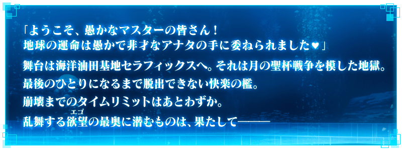
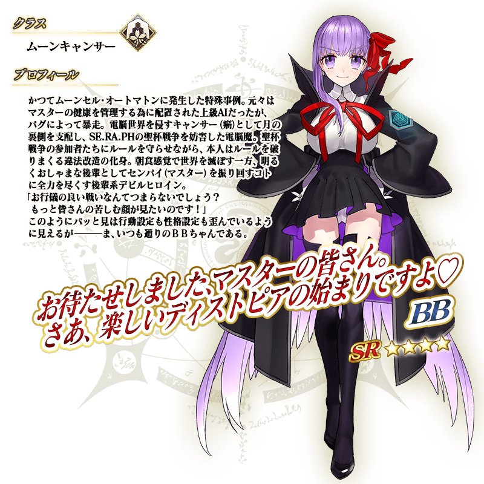

◆活動舉辦時間◆
2019年2月20日(三) 17:00～(預定)
◆活動概要◆
舉辦特別活動「復刻版:深海電腦樂土 SE.RA.PH -Second Ballet-」！
請盡情享受由Fate/EXTRA CCC的原作者奈須きのこ執筆的特別活動！
活動限定Servant「★4(SR)BB」也登場！
推進主線關卡，讓「★4(SR)BB」洗心革面・並得到她吧！
※本頁面皆為開發中圖片。會有與實際圖片相異的情況。 ※本活動為再調整在2017年舉辦的Fate/EXTRA CCC×Fate/Grand Order 特別活動「深海電脳楽土 SE.RA.PH」更容易遊玩的「復刻版活動」。 ※一部份的關卡為日後開放。
◆活動參加條件◆
滿足以下條件的Master才能參加
・通過「終局特異點」
※不需要通過亞種特異點(從Ⅰ到Ⅳ)。

本活動的期間中，強化「★4(SR)BB」時的獲得經驗值變成2倍。
是讓成為活動加成對象的「★4(SR)BB」等級一口氣上升的機會！
◆舉辦時間◆
2019年2月20日(三) 17:00～(預定)


本活動的期間中。將下表的Servant編入隊伍的話，在活動關卡中會提升活動道具「櫻硬幣」的掉落獲得數。
強化對象Servant，挑戰活動吧！
※活動加成的效果量因Servant而異。
※自2月16日(六) 15:00，在Servant選擇畫面和Servant強化畫面等，追加「下次活動對象」篩選器。
由於是只顯示於下個舉辦活動活躍Servant的便利功能，敬請活用。

【活動加成的對象Servant】
| 職階 | 稀有度 | Servant名 |
|---|---|---|
| Saber | ★★★★★ | 尼祿・克勞狄烏斯〔Bride〕 |
| ★★★★ | 高文 | |
| ★★★★ | 鈴鹿御前 | |
| ★★★★ | 尼祿・克勞狄烏斯 | |
| Archer | ★★★★★ | 吉爾伽美什 |
| ★★★★ | Emiya | |
| ★★★★ | Emiya〔Alter〕 | |
| ★★★★ | 崔斯坦 | |
| ★★★ | 羅賓漢 | |
| Lancer | ★★★★★ | 迦爾納 |
| ★★★★ | 弗拉德三世〔EXTRA〕 | |
| ★★★★ | 伊莉莎白・巴托里 | |
| ★★★★ | 李書文 | |
| ★★★ | 庫・夫林 | |
| Rider | ★★★★★ | 弗朗西斯・德雷克 |
| Caster | ★★★★★ | 玉藻前 |
| ★★★★ | 童謠 | |
| ★★ | 漢斯・克里斯蒂安・安徒生 | |
| Assassin | ★★★★★ | 李書文 |
| Berserker | ★★★★ | 玉藻貓 |
| ★★★ | 呂布奉先 | |
| Alterego | ★★★★★ | 殺生院祈荒 |
| ★★★★★ | Meltryllis | |
| ★★★★ | Passionlip | |
| MoonCancer | ★★★★★ | BB |
| ★★★★ | BB |
※就算成為對象Servant，也會有不在本活動主線劇本登場的情況。